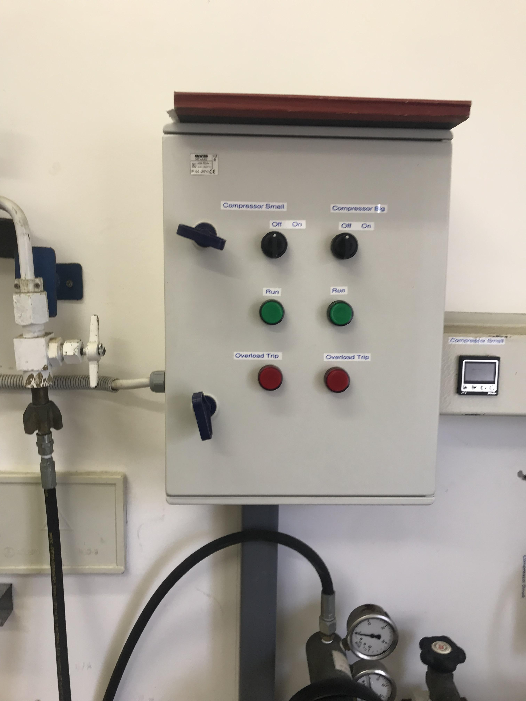

7 Diving
Most of the dive cylinders are found in the Workshop (Room 162), between the specimen quarantine area and the staff bathroom, and some are kept in the corridor right outside the Workshop (“Diver preparation area”) for accessibility to any divers on duty. They are mainly used to scuba dive in the Aquarium’s main tank during feeding and cleaning operations, but they can also be used to sample display animals in the sub-tidal zone e.g., Red bait (Pyura stolonifera).
Diving should only be done by individuals with the necessary certification and experience.
7.1 Refilling
One large Bauer and one small Poseidon electric compressor are used to fill the dive cylinders up (Figure 7.1), via an air bank, using what is popularly referred to as the “Cascading filling system”.
In this system, air decants into dive cylinders from an air bank (Figure 7.2), while simultaneously being topped up by the air compressor. The air bank is maintained to ensure the dive cylinders can still be filled up if the compressor is not working.
There are 10 small (10\(l\)) and 3 larger (50\(l\)) cylinders used for diving and for the air bank, respectively. The dive cylinders are kept close to a mounted wall heater to keep their temperatures from dropping too low and thus, preventing condensation on the tanks outer surface (Figure 7.3).
Only the Bauer compressor is currently operational.
For the sake of convenience, ensure that the majority of the dive cylinders are always filled with air i.e., there should never be more than 2 empty cylinders at a time.
- Lift the empty dive cylinders and leave them standing up right.
- When empty, the dive cylinders are left laying horizontally on the ground with their air inlets exposed.
- The tanks should never be completely depleted (leave them at approximately 20bar before refill).
- Examine the Bauer compressor’s oil level.
- Use the dipstick found at the top of the compressor (Figure 7.1).
- If the compressor’s oil level is low, refill with spare Bauer compressor oil found in the cupboard next to the compressor in the Workshop.
- If there is no oil in stock, more can be obtained from Benguela enterprises (Contact Mr. Roberto).
- Connect the filler whips (Figure 7.4), from the air bank, to the air inlet of the empty cylinders.
- The valves on the air bank valve rack and 50\(l\) air cylinders should be left open when not in use (Figure 7.4).
- Secure the whips to the cylinders by tightening the threaded coupling of the lock valves.
- Close the pressure release valves on the connected filler whip (Figure 7.4).
- Turn clockwise.
- Open the air discharge valve on the filler whips.
- Open the air inlet valves on the empty cylinders.
- Turn anti-clockwise.

- Switch the Bauer air compressor (Figure 7.1) on and press the “run” button on the compressor switch board (Figure 7.5).
- Allow the cylinders to fill up.
- The compressor will stop filling the cylinders up automatically once they reach 220bar.
- Final pressure can be read from the manometer directly above the bank valve rack (Figure 7.4).
- For two cylinders, this will last approximately 25mins.
- Once full, open the pressure release valve on the filler whip.
- Detach the dive cylinders from their respective filler whips.
- Close the air inlet valves of the dive cylinders.
- Close the air inlet valves of the filler whips.
- Cover the inlet valves of the cylinders’ with masking tape and leave them standing upright close to the mounted heater next to the other cylinders (Figure 7.3).
- This is done to show that they have recently been filled.
- Re-rack the filler whips.
- For steps 13 and 14, drain the waste fluids into a small used bottle (Figure 7.6).
- Drain the used oil from the compressor.
- Open the valve on it’s bottom left side (Figure 7.6).
- Decompress the compressor air.
- Open the two decompression valves on it’s bottom right side slowly (Figure 7.6).
- Close the decompression valves when done.
- Complete the relevant log sheet and book.
- Found on top of the compressor switch board (Figure 7.5).
It is important to let the dive cylinders cool down for at least 6 hours before using them.
The rate at which the air cylinders have to be filled (cylinders/month), depends almost entirely on how frequently they are used.
DISCLAIMER
This section does not claim to provide sufficient details describing how to operate the Bauer and the Poseidon air compressors. It serves only as a brief guide to help technicians employed by the MFMR, use the compressors to fill dive cylinders that will only be used inside the Aquarium or by Aquarium staff. For a more comprehensive description of the Aquarium air compressors’ operation, please refer to the “Compressor manual” provided by the Namibian Underwater Federation. To ensure that the compressors and dive cylinders are suitably maintained, it is strongly advised that potential air compressor operators obtain the appropriate training and/or operator certificates before using them. It should be understood that the author(s) of this manual do not assume any laibility for any damage to property/personal injury sustained while following the instructions in this document.